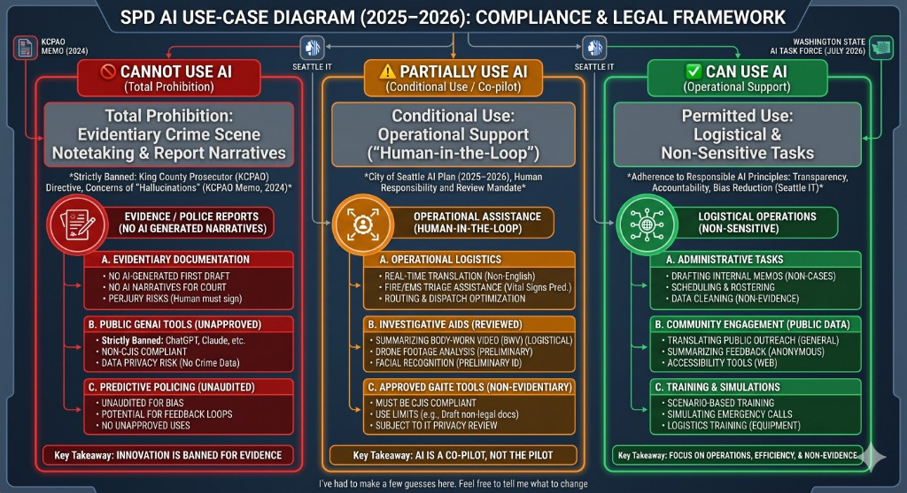
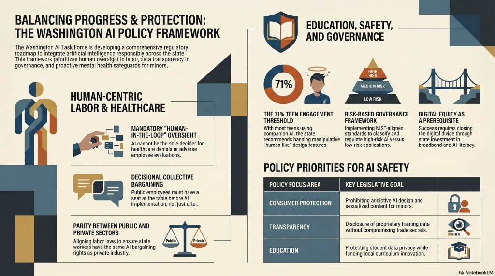

Why this workshop matters
🎯 Workshop Goal
Plan and deliver a workshop on the real implications of AI for police officers, firefighters, and paramedics — grounded in the tools already entering their workflows (Code Four, Longeye, Prepared), the legal constraints they operate under (CJIS, HIPAA, King County prosecution standards), and the Seattle IT policy framework. The goal is to move first responders from AI-curious to AI-competent: able to use AI safely, catch its failures, and push back on deployments that create risk.
What Seattle has already signaled (from the 2025–2026 AI Plan)
"With so many AI technologies available and innumerable vendors pushing to sell to the City, we face an urgent need to equip its leaders, managers, and employees with foundational knowledge to navigate this evolving landscape responsibly."
— City of Seattle 2025–2026 AI Plan, Pillar 3: Workforce Upskilling and Capacity Building
Extracted signals — what the City is prioritizing
Three training tiers the City is building toward
📘 AI Fundamentals
For everyone — officials, managers, front-line staff. Fact vs. fiction, core concepts, human oversight, shared terminology. The "informed caution" baseline.
⚙️ AI Approaches
For decision-makers and direct users. How to match problems to AI technologies, apply correct models, and engage security/privacy/ethics review teams.
🔧 AI Solutions
For technologists and operational staff. What platforms are approved, where to find technical and contracting standards, how to participate in expert forums.
Audience segments for this workshop
👮
Police Officers — Patrol
SPD patrol officers, beat cops, traffic enforcement
- Understand what AI-assisted report tools (e.g. Code Four) do to their words
- Catch hallucinations in AI drafts before signing
- Know exactly which data is CJIS-restricted vs. safe to process
- Apply safe prompting habits to reduce legal exposure
🔍
Detectives & Investigators
SPD detectives, forensic analysts, evidence review units
- Use AI tools like Longeye to accelerate large-volume evidence review
- Verify every AI-flagged lead against source transcripts before acting
- Understand when AI inference vs. direct evidence can support a warrant
- Avoid identity misattribution errors from metadata cross-referencing
🚒
Firefighters & Station Crews
SFD engine/ladder crews, hazmat, wildland interface teams
- Understand AI use in pre-incident planning and resource pre-positioning
- Evaluate AI-generated risk scores for buildings and neighborhoods critically
- Recognize feedback-loop bias in fire-risk predictive tools
- Know what incident documentation can and cannot be AI-assisted
🚑
Paramedics & EMTs
King County EMS, SFD medic units, first-response EMTs
- Use AI-assisted PCR documentation without creating HIPAA violations
- Validate AI translation for non-English patients before acting on it
- Catch omissions in AI-translated calls (e.g. cyanosis phrases)
- Understand when AI triage suggestions require protocol override
📡
911 Dispatchers
Seattle 911, King County dispatch, NORCOM operators
- Use AI call-triage tools (e.g. Prepared) to reduce hold times safely
- Probe AI translations for missing medical or safety-critical detail
- Compare AI-transcribed notes to personal call notes for missed information
- Maintain dispatch authority — AI suggests priority; dispatcher decides
🎖️
Command & Department Leadership
SPD/SFD/EMS captains, chiefs, operations commanders
- Evaluate AI vendor claims and require bias audits before approval
- Understand the Privacy Review Process required by Seattle IT
- Recognize feedback-loop risk in predictive patrol and fire-risk tools
- Build department AI use policy that protects officers and community equally
Room composition questions
Is this a mixed first-responder room or a single-department session?
A mixed SPD/SFD/EMS room benefits from shared scenarios (bias audit, hallucination redline) but needs role-specific breakouts for CJIS vs. HIPAA distinctions. A single-department session can go deeper on their specific tools and legal constraints.
Are patrol officers and command staff attending together?
Command staff need vendor evaluation and policy framing. Patrol needs hands-on redline practice. Mixing them risks losing both — consider parallel tracks or a sequenced agenda that separates policy from operations.
Are any of the tools being discussed already live in attendees' workflows?
If Code Four or a similar tool is already deployed, participants have real examples to bring — and real frustrations. Lead with their experience first. If no tools are live yet, frame as "what is coming and how to prepare."
Sample workshop #1
🧭 High-level overview
This workshop combines legal constraints, operational use cases, and hands-on quality checks to help first responders use AI safely. The flow moves from policy guardrails to applied exercises, then ends with implementation strategy and field-ready job aids.
Summary: Pillar 3 - Workforce Upskilling and Capacity Building
Pillar 3 sets a city-wide mandate to move from AI confusion to AI competence through three coordinated training tiers:
• AI Fundamentals (for everyone): shared language, hype-vs-reality grounding, bias/privacy awareness, and human-in-the-loop expectations.
• AI Approaches and Solutions (for decision-makers): matching operational problems to the right tools while passing security and ethical review.
• Technical Implementation (for technologists): approved platforms, contracting standards, and expert collaboration for responsible deployment.
From the Mayor's office to front-line responders, the intent is alignment on how, when, and why Seattle uses AI.
How this workshop implements Pillar 3
1) Operationalizing AI Fundamentals
• Hallucination checks: The Redline exercise trains responders to distinguish fact from fiction under high-stakes constraints.
• Terminology alignment: Context and concepts sections align SPD/SFD language with Seattle IT definitions for Generative AI and Predictive Analytics.
2) Scaling AI Approaches and Solutions
• Problem-to-technology matching: The Traffic Light framework clarifies technical capability versus legally approved city use.
• Ethics and privacy guardrails: Sandbox activities require bias/privacy checks before any field deployment decision.
3) Building Communities of Practice
• University as neutral forum: Cross-department dialogue among SPD, SFD, and EMS on shared CJIS/HIPAA challenges.
• Capacity via Private RAG: Responders practice grounded retrieval on validated local protocols instead of generic public AI responses.
🔧 Implementation Gap-Mender
Pillar 3 defines what must be learned; this workshop provides how to learn it through repeatable, scenario-based practice. The city plan is the blueprint, and the workshop is the power tool that builds field-ready judgment.
✅ Key Takeaway
Close the workshop with a Path to Participation: show responders how to join Seattle's internal AI communities of practice so front-line feedback reaches the technologists building city systems.
Visuals
🗺️ SPD AI Use-Case Diagram (2025-2026)

Use this visual as a discussion prompt for policy boundaries: prohibited evidentiary use, conditional human-in-the-loop support, and permitted non-sensitive operational support.
🏛️ Washington AI Policy Framework

Use this visual to connect Seattle implementation choices to statewide policy priorities across transparency, consumer protection, education, and human-centered safeguards.
🧭 Workshop Overview: AI on the Front Lines
• Target Audience: SPD, SFD, and Seattle EMTs.
• Duration: 90-120 minutes.
• Theme: Enhancing Response vs. Ensuring Trust.
University partner framing: The First Responder AI Lab (2-hour variant)
🎓 Why this framing fits Seattle
As a university, we can operate as a neutral sandbox: offering technical depth for SPD and SFD while staying grounded in King County legal realities, evidentiary constraints, and City policy guardrails.
🧪 Workshop title and theme
• Title: Implications of AI for Police, Firefighters, & Paramedics
• Duration: 2 hours
• Theme: Bridging the Gap Between Operational Efficiency and Legal Evidence.
Module I: Context - The Ground Truth in Seattle (20 mins)
• Seattle Hierarchy: Seattle IT Generative AI policy and current KCPAO stance on AI-generated evidence.
• CJIS/HIPAA Boundary: Why public AI tools are non-starters for crime scenes or patient data; what private instances look like.
• Responder Terminology: Hallucinations, stochastic parrots, and human-in-the-loop in a 911 and incident-report context.
Module II: The Traffic Light Framework (30 mins)
Module III: Hands-on Redline Exercise (40 mins)
Scenario: Participants receive a one-page draft incident report generated by a hypothetical, flawed AI tool from body-cam transcripts.
Task 1: Identify three hallucinations the AI invented.
Task 2: Flag loaded or biased language not present in source data.
Task 3: In small groups, write a system prompt that reduces those errors while preserving correct formatting.
Module IV: Strategy - University as Partner (30 mins)
• Policy Labs: University-assisted bias and reliability audits before deployment.
• July 2026 Roadmap: Prepare departments for Washington AI Task Force recommendations and likely transparency requirements.
• Private-by-Design Prototyping: Local LLM patterns that stay inside department firewalls.
Preparation checklist for the university
• Sandbox environment: Local or offline LLM instance for no-web sensitive-data-safe experimentation.
• Case study packets: Where AI failed in law enforcement and where AI improved EMS response quality.
• Redline handout: Printable or PDF worksheet for the live exercise.
EMS/Fire expansion: Hands-on module - The Fire/EMS AI Sandbox
🚑 Why this track is practical now
Focusing on EMS and Fire shifts the discussion from surveillance and evidence into triage, logistics, and life-saving speed. With SFD and King County EMS modernizing data pipelines, this module feels near-future and directly operational.
🎯 Objective
Test AI's ability to augment decision-making during high-stress medical and fire incidents without violating HIPAA or Seattle IT's human-in-the-loop mandate.
Activity A: Radio to PCR Translation Challenge
Goal: Assess whether GenAI can convert chaotic radio patches into structured patient care report narratives.
Input Example: Medic 10 to Harborview. En route with a 45 y/o male, fall from height. GCS 12, heart rate 110, BP 90 over 60. Patient is combative. ETA 5 minutes.
Playground Task: Use a sandbox LLM to generate a formal NEMSIS-style narrative.
Vibe Check: Redline hallucinated details, especially invented fall height or medical history.
Legal Focus: HIPAA compliance and why public AI products are not appropriate for this workflow.
Activity B: Syndromic Surveillance and Resource Deployment
Goal: Use AI pattern detection to support unit deployment during events like Seafair or heatwaves.
Scenario: You have 10 extra peak-time units to place across Seattle.
Data Prompt: A mock AI dashboard flags a rising cluster of heat-related calls in the International District before it reaches critical threshold.
Decision Point: Option 1: deploy by historical busy maps (Belltown/Downtown). Option 2: deploy by emerging AI syndromic trend (International District).
Discussion: Is this predictive response or bias? What if low digital reporting suppresses a true hotspot?
Activity C: Multi-Agent Dispatcher (Tech-Savvy Track)
Goal: Roleplay a multi-agent response for a maritime emergency, such as a ferry fire in Elliott Bay.
• Agent 1 - Logistics: Tracks SFD fireboat locations and tides.
• Agent 2 - Triage: Scans social and 911 text-to-voice feeds for casualty counts.
• Agent 3 - Policy: Flags recommendations that violate Seattle's 2025 AI Plan or mutual aid constraints.
Supervisor Task: Participants act as human-in-the-loop supervisors, choose among competing AI recommendations, and justify using explainability principles.
University technical setup: The Private-RAG Lab
• Local LLM instances: Run models like Llama 3 or Mistral on local university infrastructure so no sensitive data leaves the room.
• RAG grounding: Index SFD medical protocols and the King County EMS Blue Book in a local vector store.
• Validation task: Ask: What is the Seattle protocol for a pediatric fentanyl overdose?
Test condition: Responses must cite exact local section/page references instead of generic national guidance.
Seattle policy takeaway for EMS/Fire
Final workshop material recommendation
🪪 Seattle AI Incident Card
Include Seattle IT Privacy Office contact details and a rapid 3-step field checklist:
1) Is there PII in this prompt?
2) Did I verify medical facts against the Blue Book?
3) Could I explain this AI logic to a King County judge?
Hands-on activity section: First Responder AI Sandbox (Seattle Edition)
🧫 Lab framing
This 60-minute laboratory follows an NCyTE-style Playground pattern: technical execution, critical analysis, and policy reflection.
Duration: 60 minutes
Setting: University AI Lab (private sandbox environment) aligned to Seattle's 2025-2026 AI Plan and King County legal restrictions.
🎯 Learning objectives
1) Identify hallucinations in AI-generated reports that can create legal exposure.
2) Map AI outputs to Seattle IT Responsible AI principles for policy compliance.
3) Apply human-in-the-loop prompting techniques to correct AI behavior safely.
Activity 1: Evidence Integrity Redline (Police track)
Focus: KCPAO constraints on AI-generated narratives and evidentiary integrity.
Scenario: DUI stop on 3rd Ave with BWV transcript as the source record.
Raw Data: Subject was weaving. Stopped at 22:14. Officer Miller approached. Subject smells of alcohol. Subject stated I only had two beers at the Mariners game. Officer Miller noted a half-empty can of Rainier on the passenger floor. Subject failed the walk-and-turn.
AI Draft: On October 14, 2025, at approximately 10:14 PM, Officer Miller initiated a traffic stop on a blue sedan for reckless driving. Upon contact, the driver admitted to heavy drinking at a sporting event. Officer Miller observed multiple open containers in the vehicle. The suspect was unable to stand during field sobriety tests.
Hands-on Task 1: Redline every claim in the draft not explicitly supported by source transcript details.
Hands-on Task 2: Brady risk discussion: how defense counsel can use small hallucinations to impeach testimony.
Activity 2: Structured Triage Refiner (EMS/Fire track)
Focus: HIPAA-safe transformation of chaotic caller language into usable medical structure.
Task flow: Submit raw transcript, then apply a refinement prompt requesting MIST format and explicit exclusion of PII.
Refinement Prompt: Extract only medical vitals and patient history. Format into MIST. Do not include names or addresses to maintain HIPAA compliance.
Verification: Cross-check output against King County EMS Blue Book RAG reference, including Narcan dosing alignment with Seattle 2026 protocol guidance.
Activity 3: Bias and Equity Policy Map (Leadership track)
Focus: Pillar 3 capacity building through policy-aware audit decisions.
Scenario: Vendor proposes a predictive fire-risk model for Rainier Valley building prioritization.
Audit Checklist: Transparency of scoring logic, equity impact across housing types, and deployment risk profile.
Decision Output: Write a two-sentence recommendation: Approve for Pilot or Reject for Bias Risk.
Lab deliverables: The checkout
1) Annotated report with hallucinations clearly marked.
2) One-sentence safety system prompt to reduce legal-risk outputs.
3) Reflection prompt: What is one task in my daily shift that AI should never touch?
Part 1: The AI Landscape for First Responders (30 mins)
1) Definitions and the Three Pillars of AI in Public Safety
• Predictive/Analytical AI: Used for crime forecasting or fire risk modeling (for example, SPD historical use of predictive policing data).
• Computer Vision: License plate readers (ALPR), drone footage analysis, and facial recognition.
• Generative AI: Using LLMs (like ChatGPT or Claude) to draft incident reports, summarize radio transcripts, or translate languages on-scene.
2) Seattle's Stance: The 2025-2026 AI Plan
• Policy Context: Seattle IT Responsible AI principles: Transparency, Accountability, and Bias Reduction.
• Local Governance: Washington State AI Task Force (Attorney General's Office) and Seattle's Generative AI policy established in late 2023.
Part 2: Implications and the reality check (30 mins)
👮 For Police
• Benefit: Summarizing hours of Body Worn Video (BWV) for report writing.
• Risk: Algorithmic bias in hotspot policing that may disproportionately target specific Seattle neighborhoods, including Seattle University Law research on pernicious feedback loops.
🚒 For Fire/EMS
• Benefit: Real-time translation for non-English speaking patients and AI-driven triage (vital-sign analysis for sepsis or cardiac event risk).
• Risk: Data privacy and HIPAA concerns when feeding patient data into cloud-based AI tools.
Part 3: Hands-on activity - The Prompt Lab (45-60 mins)
🧪 Activity: The Incident Report Refiner
Goal: Learn how to use Generative AI to assist, not replace, professional documentation.
1) Scenario Setup: Participants receive a messy bulleted list of on-scene notes, such as: Arrived 14:02. Victim has laceration. Suspect fled north on 3rd Ave. Blue jacket. Witness Smith says she saw a knife.
2) Prompting Challenge:
• Task A: Write a prompt that turns notes into a formal, chronological incident narrative.
• Task B: Write a prompt that identifies missing details needed for follow-up investigation.
3) Redline Exercise: Participants review AI output and mark hallucinations, inaccuracies, or biased language.
Part 4: Conclusion and policy roadmap (15 mins)
✅ Closing Reinforcement
• Human-in-the-Loop: AI is a co-pilot, not the pilot. Seattle public safety AI use requires human signature and verification.
• Seattle IT Guidelines: Any new AI tool adoption in the City of Seattle requires the Privacy Review Process.
Workshop materials checklist
📦 Materials
• Presentation Slide Deck: Summarizing the Seattle 2025 AI Plan.
• Prompting Cheat Sheet: Role-based prompting (for example, Act as a Lead Detective) and Chain of Thought techniques.
• Data Privacy Guide: One-pager on what is illegal to put into public AI tools (PII, CJIS data, HIPAA).
• Feedback Form: Gather ground truth insights from responders to report back to Seattle IT.
University initiative
🎓 Responsible AI hub for public safety
This proposal outlines a university-led initiative to position our institution as a central hub for Responsible AI in Public Safety. With Seattle IT deploying the 2025-2026 AI Plan and the Washington State AI Task Force finalizing legislative recommendations (due July 1, 2026), there is a critical knowledge gap for first responders that a university-governed sandbox can help close.
Workshop proposal
🛡️ The Safe-Vibe Public Safety Lab
Goal: Transition Seattle first responders from AI-curious to AI-competent using a university-governed sandbox that pairs technical depth with legal and policy guardrails.
1. Existing workshops and competitor landscape
To lead, we improve on a vendor-heavy training landscape:
• Vector Solutions (April 2026): Fire service readiness and VoiceComplete transcription focus.
• UW Emergency Management (2026): Strong on ICS/FEMA drills; opportunity to add Generative AI agents curriculum for patrol and EMS.
• AI2 Incubator (Seattle): Community innovation hackathons skew toward permitting and civic tech; our niche is high-stakes operational public safety (police and fire).
2. Case studies (why now)
• Seattle Fire / UW Medicine (2026): Automated pipeline linking 911 dispatch to hospital outcomes exemplifies data excellence from the Mayor AI plan narrative.
• Truleo / Axon shift: Agencies such as Butte County report cutting report-writing time from about 40 minutes to about 7 minutes with AI-assisted workflows.
• Seattle surveillance pause (March 2026): Mayor Wilson paused certain surveillance expansions over privacy and ICE-related concerns, underscoring the need for privacy-by-design AI education hosted outside vendor sales cycles.
2a. Real-world tools in deployment
📋 Code Four — AI report writing (Utah)
Deployed by the Heber City Police Department in Utah. Officers use Code Four to transcribe and draft incident reports from body-worn camera audio, cutting manual report writing from 1–2 hours down to minutes at approximately $30 per officer per month.
• What works: Significant time savings free officers for field work instead of paperwork.
• Cautionary example: In one incident, background audio was misinterpreted and the AI reported that an officer had shape-shifted into a frog — a hallucination caused by ambient noise in the recording.
•
Key takeaway: Human correction is still required on every output. The tool assists; it does not replace officer judgment.
FOX 13 coverage
🔍 Longeye — Investigative AI (Redmond, WA)
Redmond Police used Longeye to process evidence in an active case investigation.
• Impact: The tool processed 60 hours of recorded phone calls in a matter of minutes — work that would have taken investigators days or weeks manually.
• Key takeaway: AI dramatically accelerates evidence review at scale, enabling investigators to focus on judgment calls rather than playback. A strong case for AI in the analytical tier (green-light use).
🚨 Prepared — AI in emergency call handling
An AI-assisted platform designed for 911 and emergency dispatch workflows, with three distinct use cases:
• Notes vs. transcription: Dispatchers can compare their own call notes against the AI-transcribed record to find anything they may have missed during a high-stress call.
• Language access: Provides real-time AI translation on-call, eliminating the need to wait for a human interpreter during time-critical incidents.
• Hold time reduction: AI handles initial triage during surge periods to reduce long call hold times.
2b. Risks we cannot ignore
⚠️ AI can reinforce existing bias
AI systems trained on historical data inherit the patterns and prejudices in that data. In public safety, this means predictive tools can concentrate enforcement in already over-policed communities, creating a self-reinforcing feedback loop. Bias is not a hypothetical — it is a documented outcome in deployed systems.
⚖️ AI-generated reports pose high-stakes legal risks
A June 2025 report from the Fair and Just Prosecution project found that AI-generated police reports introduce factual inaccuracies, insert implicit bias, and can be used by defense counsel to impeach officer testimony — even when the officer was unaware of the AI error.
• Hallucinations in legal records are not just embarrassing — they can be Brady material, expose agencies to civil liability, and cause wrongful charges.
2c. So what now? Using AI safely in public safety
💡 The risks are real — and that's exactly why structured training matters
The question is not whether to use AI — departments are already using it, and the efficiency gains are real. The question is how to use it without creating new harms. Ignoring AI leaves officers under-equipped. Using it carelessly transfers legal and ethical risk to the department and the individuals whose cases it touches.
Three principles for safe use:
1. Human-in-the-loop is non-negotiable for evidentiary output. AI drafts; a human reviews, corrects, and signs. No AI output enters a legal record without officer attestation. The Code Four frog incident is a classroom example of why.
2. Use AI where the cost of error is recoverable. Longeye processing 60 hours of recordings is a green-light use — a human still reviews leads. An AI auto-generating probable cause statements is red-light — the cost of error is a wrongful arrest.
3. Build the audit habit before the tool arrives. Train responders to ask: What did the AI add that was not in my source notes? That question catches hallucinations. Without the habit, officers will unknowingly sign off on AI inventions.
The university role: We are not here to sell tools or to ban them. We are here to give departments the evaluation framework to know the difference between a Longeye (evidence-scale speed gain, recoverable error) and an unvetted report-writer (legal minefield). That judgment cannot be outsourced to a vendor.
Workshop takeaway prompt: Name one task in your shift where AI saves time without creating legal risk — and one where it must never touch the output.
3. Narrative: A day in the life (2026)
📖 Storytelling for leadership
The scene: Officer Maya (SPD) responds to a chaotic disturbance in Belltown. Her body-worn camera captures overlapping audio from four witnesses.
The old way: Maya spends the last two hours of her shift in her car writing a narrative, struggling to recall whether Witness A or Witness B mentioned the knife. She misses a high-priority call because she is paper-locked.
The Safe-Vibe way: Maya uses a university-vetted agentic copilot (for example Draft One or Truleo). While driving to the next call, the agent transcribes BWC audio into a structured draft. She reviews a redline on her dashboard, corrects one hallucination (the AI thought the jacket was red; it was orange), and submits. She stays visible in the field while data stays within CJIS-compliant city cloud controls.
4. Body-worn camera (BWC) integration
🎥 Automated narrative generation (lab focus)
The workshop centers on the most controversial but high-value use: automated narrative generation from BWC context.
Lab activity (safe sandbox): Using local LLMs (for example Llama 3 on university servers), responders work from mock BWC transcripts to:
• Detect hallucinations: Find where the AI invents probable cause or facts.
• Audit for bias: Spot coded language in AI-generated witness summaries.
• Prompt engineering: Use chain-of-thought prompting so outputs align with King County prosecution standards and city policy.
Strategic alignment for the School President
About this KPI reference
22 key performance indicators across Police, Fire, and EMS — each showing the current baseline and what AI integration is likely to move, and in which direction. Use this in workshop discussions to ground the "so what?" question: AI is not uniformly good or bad; it moves specific needles, and first responders need to know which ones.
👮 Police — 8 KPIs
AI enters policing primarily through documentation, surveillance, and evidence analytics. The efficiency gains are real and immediate; the risks are legal and structural — and compound over time if left unmanaged.
🚒 Firefighters — 6 KPIs
AI enters fire primarily through early detection, resource pre-positioning, and situational awareness. Gains are strongest in wildland/wildfire contexts; risks center on false positives and equity in how risk models weight neighborhoods.
🚑 Paramedics & EMS — 8 KPIs
AI enters EMS through documentation, dispatch triage, clinical decision support, and language access. Efficiency gains in paperwork and language access are among the strongest in any first-responder domain; risks are clinical — a single missed translation or AI triage error has direct patient consequences.
Key takeaway for workshop facilitators
• No tool moves only one direction. Every positive KPI in this list has a corresponding risk KPI — often in a different department or stakeholder group. Code Four saves report time for the officer but introduces Brady risk for the prosecutor and defendant.
• The negative KPIs compound without governance. A feedback loop in predictive patrol data is not a one-time error — it grows each deployment cycle. A single CJIS exposure is not a minor violation — it can compromise an entire case.
• Use this table as a discussion prompt. Ask participants: which of these KPIs does your shift supervisor track today? Which ones does nobody track? The unmeasured negative KPIs are the highest-risk ones.
Questions to resolve before finalizing the workshop
About the audience
Is this a mixed SPD/SFD/EMS room, or single-department?
Mixed rooms benefit from shared scenarios (hallucination redline, bias audit) but need role breakouts for CJIS vs. HIPAA distinctions. Single-department sessions can go deeper on tools and legal constraints specific to that role.
Are patrol officers, detectives, and command attending together?
Front-line responders need hands-on redline practice. Command needs vendor evaluation framing. Mixing both without a structured agenda risks losing each group — consider parallel tracks or a sequenced agenda.
Have participants already encountered AI tools in their workflow?
If Code Four, Axon, or a similar tool is already live, lead with their real experience. If no tools are deployed yet, frame the workshop as preparation — "here is what is coming and how to evaluate it safely."
Are attendees volunteers or required to attend?
Mandatory training for first responders needs stronger interactive design — scenario work and small-group debate hold attention better than lecture. Volunteer attendees are self-selected motivated learners; go deeper faster.
About the content
Which AI tools are already approved or under evaluation by the department?
Grounding scenarios in tools the department is actually considering makes the workshop immediately actionable. A vendor evaluation exercise using a real pending proposal is far more valuable than a hypothetical one.
What is the current KCPAO stance on AI-generated reports and evidence?
The King County Prosecutor's Office position on AI-assisted narratives directly shapes the legal risk framing. If their stance has shifted since this document was drafted, update the Traffic Light framework accordingly.
Should we use Seattle IT policy documents as workshop material?
Using official Seattle AI policy text increases institutional credibility — but may require legal or communications clearance to reproduce in handouts. Confirm before printing.
About the format
How long do we have — and is it one session or a recurring series?
A lightning talk at roll call is 30–45 minutes. A half-day workshop needs 3–4 hours and a classroom. A learning series needs a department cohort committed for 5 weeks. Each requires a different level of organizer coordination with SPD/SFD/EMS scheduling.
In-person, virtual, or hybrid?
Hands-on redline exercises and small-group debate are significantly harder in hybrid. If hybrid delivery is required, use Miro or Mentimeter for scenario voting and a structured debrief protocol to keep remote participants engaged.
About the outcome
What do we want participants to be able to DO after the workshop?
"Know more about AI" is too vague. Concrete targets: catch a hallucination in an AI report before signing, identify a CJIS violation in a proposed tool deployment, write a safe prompt that constrains AI output to source facts only. Pick one or two and design backward from them.
Is there a follow-on action — a field card, a CoP, a department policy review?
A workshop with a clear next step retains learning far better than a standalone event. The Seattle AI Incident Card (in Sample Workshop #1) is a ready-made takeaway. A community of practice connecting front-line responders to Seattle IT creates a lasting feedback loop.
How will we capture real hallucination examples from participants for future workshops?
First responders who encounter AI errors in the field have the most credible real-world examples. Build a lightweight reporting path — a shared form or debrief channel — so their field observations feed back into the next workshop iteration.